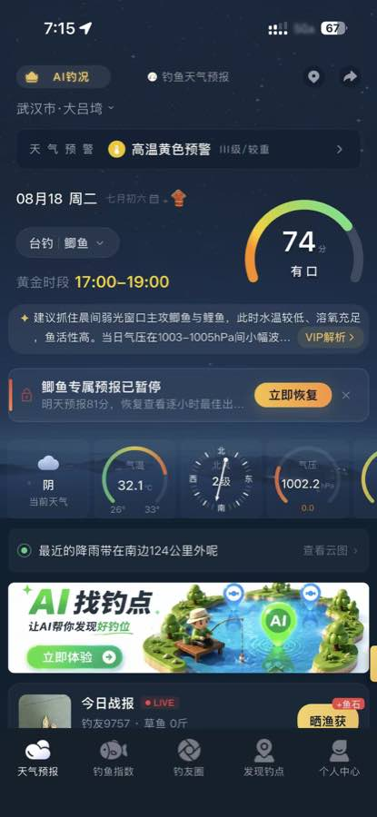
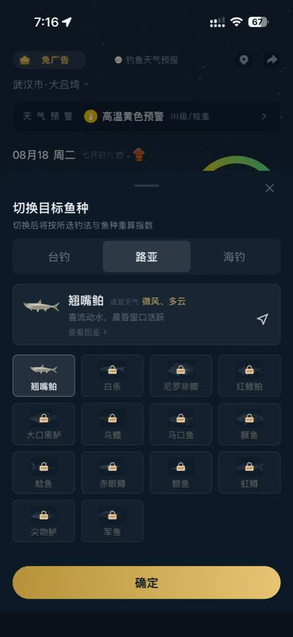
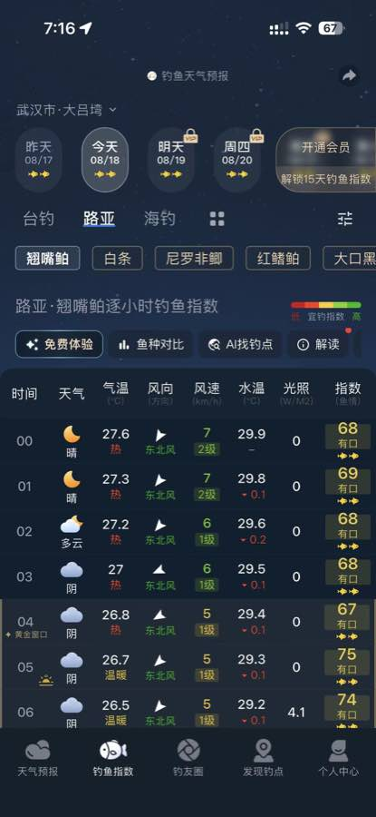
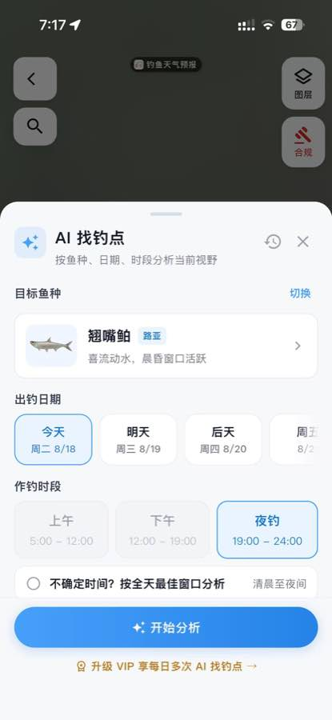
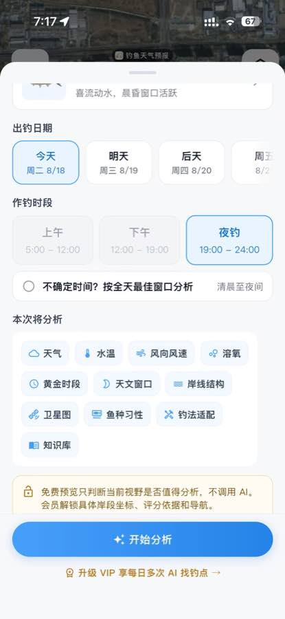
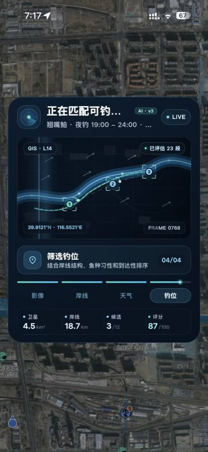
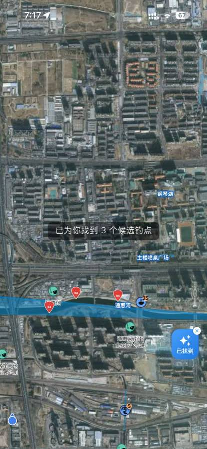
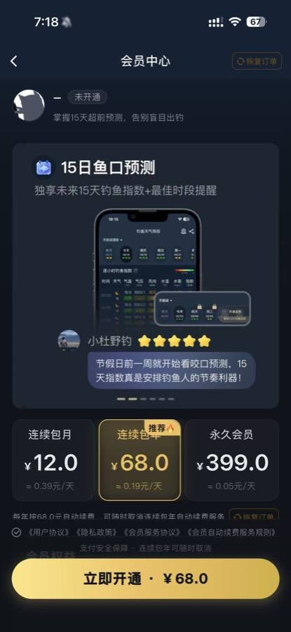
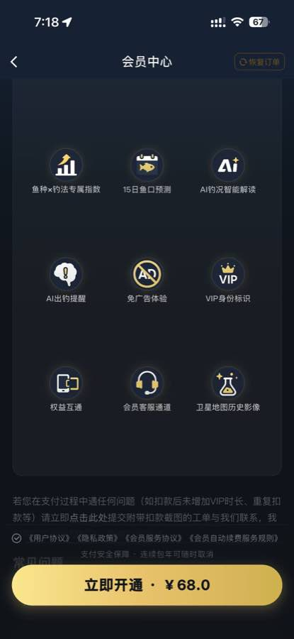

0. 一页结论
这是一个以天气与鱼情指数为入口、用鱼种/钓法/日期/时段约束地理空间搜索，并通过会员权益变现的钓鱼决策产品。截图能确认一个阶段化的 “AI 找钓点” 功能流程，但不能确认存在多个自治 Agent。
从查看天气到候选钓点与会员页。
页面没有角色名、交接者或对话式 Agent。
“AI 找钓点分析器”（功能命名，非官方 Agent 名）。
地点不一致；免费预览/AI/VIP 状态不一致。
1. 查看范围与证据边界
已查看
- 首页天气、预警、鱼情分与黄金时段（S01）
- 钓法/鱼种切换与 VIP 锁定选项（S02）
- 逐小时钓鱼指数与功能入口（S03）
- AI 找钓点配置、分析因子、执行进度与候选结果（S04–S07）
- 会员状态、价格、权益、协议与恢复订单入口（S08–S09）
无法确认
- 截图是否来自同一个连续会话、同一账号、同一地图视野。
- 按钮背后的真实 API、模型、Prompt、数据库和供应商。
- 候选点是否可达、合规、安全，评分是否真实有效。
- 失败、重试、网络中断、用户取消、扣费成功/失败后的行为。
- “AI 钓况智能解读”和“AI 出钓提醒”的实际执行记录。
证据等级
2. 截图证据索引
编号按截图时间排序。图像仅用于本地报告展示；精确坐标与用户头像不在文字中复述。

“武汉市·大吕湾”“74分 有口”“黄金时段 17:00–19:00”“AI找钓点”。

“切换后将按所选钓法与鱼种重算指数”；路亚/翘嘴鲌；多项 VIP 锁定。

路亚·翘嘴鲌；00–06 时天气、水温、风等指标；入口“AI找钓点”。

“按鱼种、日期、时段分析当前视野”；今天、夜钓被选中；“开始分析”。

天气、水温、溶氧、岸线、卫星图等 11 类因子；免费预览/会员说明。

`AI·v3`、`GIS·L14`、“已评估23段”“候选3/12”“评分87/100”。

“已为你找到3个候选钓点”；地图显示评分标记与“通惠河”等地名。

状态“未开通”；月/年/永久方案；年费 ¥68；“恢复订单”。

15 日预测、AI 解读、提醒、免广告、历史影像、客服等。
3. 用户旅程证据表
| ID / 阶段 | 用户目标 | 用户动作 | 页面反馈 | 需要决定 | 状态/资产变化 | 情绪、阻力 | 证据 |
|---|---|---|---|---|---|---|---|
| J01 查看概况 | 判断今天是否适合出钓 | 进入天气首页 | 74 分“有口”、高温黄色预警、黄金时段、天气指标和建议 | 继续看指数、找钓点或离开 | 只读展示；是否已记录位置未知 | 信息集中但首屏较拥挤；分数带来信心，预警带来谨慎 | S01：“74分 有口”“高温黄色预警”“17:00–19:00” |
| J02 改目标 | 把默认台钓/鲫鱼改成路亚目标 | 打开“切换目标鱼种”，选路亚与翘嘴鲌，点“确定” | 提示“切换后…重算指数”；展示鱼种习性；多数鱼种有 VIP 锁 | 选择钓法、鱼种；是否付费解锁 | 当前查询条件由台钓/鲫鱼变为路亚/翘嘴鲌；指数重算被文案声明 | 可控感提升；锁定项增加选择挫败 | S01 默认“台钓｜鲫鱼”；S02 选中“路亚”“翘嘴鲌”“确定” |
| J03 看逐时指数 | 找到更具体的作钓窗口 | 进入“钓鱼指数”页，查看逐小时表 | 逐小时天气、温度、风、水温、光照、指数；未来日期部分锁定 | 选日期/鱼种，或进入“AI找钓点” | 页面查询条件保持路亚/翘嘴鲌 | 数据充足但解释成本高；未来信息受限 | S03：“路亚·翘嘴鲌逐小时钓鱼指数”“AI找钓点” |
| J04 配置找点 | 把泛化指数转为具体钓位 | 点“AI找钓点”，选今天、夜钓或全天选项 | 底部表单说明“按鱼种、日期、时段分析当前视野” | 目标鱼、日期、时段；开始或关闭 | 形成一组待分析参数；历史图标可见但内容未知 | 结构化输入清晰；“当前视野”边界不够显眼 | S04：翘嘴鲌/路亚、今天、夜钓、开始分析、关闭 X |
| J05 理解分析与权益 | 确认系统会看什么、是否要付费 | 向下查看“本次将分析” | 列出 11 类因子；说明免费预览不调用 AI，会员解锁坐标/评分/导航 | 开始分析或升级 VIP | 尚未证明调用发生 | 因子增强可信度；免费与会员边界后续发生冲突 | S05：分析因子 chips、免费预览说明、“升级VIP” |
| J06 等待分析 | 获得候选岸段 | 点“开始分析”（由相邻画面合理推断） | 4 阶段进度、评估段数、候选数、评分、地图覆盖层 | 页面未显示用户判断；可能可离开/关闭但取消语义未知 | 执行状态进入“钓位 04/04”；产生候选 3/12 与 87/100 摘要 | 过程可视化降低等待焦虑；地点冲突严重伤害信任 | S04/S05 按钮；S06：“已评估23段”“筛选钓位04/04” |
| J07 查看结果 | 在地图上选择钓点 | 查看 3 个候选标记 | Toast“已为你找到3个候选钓点”，地图标记分数 | 选哪个点、是否导航；页面未展示详情选择动作 | 结果图层新增候选点；是否保存历史未知 | 结果直观；缺少评分解释、可达性与安全确认；地点不一致 | S07：3 个候选、评分标记、“通惠河”等地名 |
| J08 评估付费 | 解锁未来预测与 AI 权益 | 进入会员中心，浏览方案与权益 | 未开通；月/年/永久价格，年费默认突出；协议、恢复订单 | 购买哪个方案、是否自动续费、返回 | 截图中未发生支付；会员状态仍“未开通” | 价格明确；免费体验与付费权益关系不清，自动续费需高度透明 | S08–S09：“未开通”“立即开通·¥68.0”“恢复订单” |
三泳道用户旅程图
S01 / J01
是：继续
S01–S02 / J02
S03 / J03
S03–S04 / J04
S04 / J05
S06 / J06
S07 / J07
S08–S09 / J08
推断
文案确认
结果可见
语义对象
免费预览 / VIP 深度结果
实际门控冲突
成功：候选结果
失败：处理未知
可见结果
S08
修改/纠偏路径：鱼种、钓法、日期、时段均有可见入口；结果出来后是否能局部重跑、回退或反馈错误尚未确认。失败/中断路径：配置页可关闭，但执行中的取消、失败提示、重试和扣费保护均无截图证据。
4. Agent 清单与 I/O 契约
| 候选能力 | 证据等级 | 出现位置 | 是否形成契约 | 原因 |
|---|---|---|---|---|
| AI 找钓点分析器（功能命名，非官方名） | 合理推断 | S04–S07 | 是 | 存在结构化输入、显式开始、阶段进度、运行指标、候选结果，足以定义功能契约。 |
| AI 钓况智能解读 | 功能名可见 | S09 | 否 | 只有会员权益文案，没有输入、执行、输出记录。 |
| AI 出钓提醒 | 功能名可见 | S09 | 否 | 只有权益文案，未看到提醒设置或通知结果。 |
| 天气/鱼情评分器 | 合理推断 | S01、S03 | 否 | 有分数和表格，但无法区分规则引擎、数据服务或 AI Agent。 |
AI 找钓点分析器
功能命名，并非官方 Agent 名称
1. 核心目标
在当前地图视野内，为指定作钓目标输出可比较的候选钓点及分数。
2. 触发条件
- 用户从指数页进入“AI找钓点”。
- 目标鱼种、钓法、日期、时段已选，用户点“开始分析”。
- 实际是否先做会员校验或免费预览，证据冲突。
3. 输入信息
- 用户当前输入：翘嘴鲌、路亚、今天、夜钓 19:00–24:00；或全天最佳窗口；当前视野。【已确认 S04–S05】
- 用户长期信息：会员状态“未开通”可见；历史任务是否读取未知。【S08；S04 历史图标】
- 项目/会话上下文：首页位置、天气与当前钓法/鱼种；地图视野。【合理推断】
- 上游输出：逐小时指数页的鱼种/钓法选择。【S02–S04】
- 公共信息：天气、水温、风、溶氧、黄金/天文窗口、岸线、卫星图、鱼种习性、钓法适配、知识库。【S05 标签】
- 运行时结果：评估段数、候选数、阶段、评分、地图候选。【S06–S07】
4. 可观察判断
- 选择岸段时结合“岸线结构、鱼种习性和到达性”排序。【已确认 S06 文案】
- 将 23 个已评估岸段缩减为候选，并展示 3/12、87/100。【已确认 S06】
- 免费预览是否只判断“值得分析”与深度 AI 分析门槛。【页面事实 + 运行冲突】
- 评分公式、因子权重、硬性排除规则、安全/合规检查。【未知】
5. 输出信息
- 用户回复：无聊天回复证据；以 Toast 和状态文案为主。
- 页面组件：四阶段进度、指标、候选地图标记。
- 结构化字段：分析阶段、已评估段数、候选数、评分（字段名为推导设计）。
- 资产：候选钓点图层；是否持久化为历史资产未知。
- 状态：configuring → analyzing → result_visible。
- 下游任务：候选详情/导航可能是下游，但截图未执行。
6. 完成条件
页面出现“已为你找到3个候选钓点”且地图存在 3 个候选标记。【已确认 S07】结果正确性、位置一致性与可达性未通过证据验证。
7. 全局上下文读写
| 对象 | 读/写 | 生产者 | 消费者 | 时机 | 等级/证据 |
|---|---|---|---|---|---|
| FishingQuery：鱼种/钓法/日期/时段/地图视野 | 读 | 用户 + 页面表单 | 找点分析 | 开始分析前 | 【合理推断】S04–S05；对象名为设计命名 |
| EntitlementContext | 读 | 会员系统 | 门控/付费页 | 分析前或结果解锁时 | 【合理推断】S05、S08 |
| EnvironmentSnapshot | 读 | 天气/环境服务 | 评分与排序 | 执行中 | 【合理推断】S01、S03、S05 |
| GeoAnalysisRun | 写 | 找点分析 | 进度 UI、结果 UI | 执行中 | 【合理推断】S06 |
| CandidateSpot[] | 写 | 找点分析 | 地图、候选详情/导航 | 完成时 | 【合理推断】S07 |
| HistoryVersion | 可能读写 | 未知 | 历史入口 | 未知 | 【未知】仅 S04 有历史图标 |
8. 异常与重试
输入缺失、数据不可用、地图权限不足、网络失败、余额/次数不足、运行中取消、自动重试和幂等扣费均未展示。【未知】同类产品应在这些状态下阻止虚假“完成”，并保留上一次结果。
推导状态机
stateDiagram-v2
[*] --> index_view: 查看指数 [S03]
index_view --> configuring: 点“AI找钓点” [S03-S04]
configuring --> configuring: 切换鱼种/日期/时段 [S04]
configuring --> closed: 点关闭 X [S04]
configuring --> entitlement_check: 点“开始分析” [S04-S05]
entitlement_check --> preview: 免费预览 [S05 文案]
entitlement_check --> paywall: 需要会员 [S05,S08]
entitlement_check --> analyzing: 允许分析 [S06]
preview --> paywall: 解锁坐标/评分/导航 [S05]
analyzing --> result_visible: 3 个候选点 [S07]
analyzing --> failed: 失败处理未知
analyzing --> interrupted: 中断处理未知
result_visible --> configuring: 修改参数重跑（建议）
paywall --> purchasing: 点“立即开通” [S08]
purchasing --> entitlement_check: 支付成功（未观察）
failed --> configuring: 重试（建议）
5. 工具/能力总表
以下均为功能性命名，并非官方工具名；“调用”只有在页面出现状态或结果时才判定为已发生。
| ID | 功能性名称 | 输入 | 可见结果 | 状态 | 证据 |
|---|---|---|---|---|---|
| T01 | 切换鱼种/钓法并重算指数 | 钓法、鱼种 | 选择状态及后续逐时指数 | 结果确认 | S02 文案；S03 页面 |
| T02 | 读取逐小时鱼情指数 | 位置、日期、钓法、鱼种 | 天气/温度/风/水温/光照/指数 | 结果确认；实现未知 | S03 |
| T03 | 创建找点分析请求 | 鱼种、钓法、日期、时段、当前视野 | 分析运行 | 合理推断 | S04–S06 |
| T04 | 检查会员权益/次数 | 用户权益、功能 | 锁定项、VIP 提示、会员页 | 合理推断 | S02、S03、S05、S08 |
| T05 | 加载天气与水环境特征 | 时空范围 | 分析因子与指标 | 输入标签确认；调用未知 | S01、S03、S05 |
| T06 | 加载 GIS/卫星/岸线特征 | 当前地图视野 | GIS 层级、卫星面积、岸线长度 | 结果确认 | S06 |
| T07 | 岸段分割与评估 | 岸线与环境特征 | “已评估23段” | 结果确认 | S06 |
| T08 | 候选筛选与排序 | 岸线、鱼种习性、到达性 | 候选 3/12、评分 87/100 | 结果确认 | S06 |
| T09 | 渲染候选地图图层 | 候选点与分数 | 3 个候选标记 | 结果确认 | S07 |
| T10 | 免费预览“值得分析”检查 | 当前视野 | 应返回值得/不值得 | 仅文案，未看到结果 | S05 |
| T11 | 导航到候选点 | 候选位置 | 导航 | 未执行 | S05 权益文案 |
| T12 | 购买会员/恢复订单 | 方案、支付状态 | 权益变化 | 仅入口，未执行 | S08–S09 |
6. 全局上下文与核心实体
| 上下文/实体 | 主要字段（语义命名） | 来源 | 消费者 | 证据等级 |
|---|---|---|---|---|
| UserContext | 界面位置、可能的位置权限、用户标识 | 系统/用户 | 天气、地图 | 位置显示已确认；权限与标识未知 |
| EntitlementContext | member_status、plan、feature_access、usage_quota | 会员系统 | 锁定、预览、支付 | “未开通”与锁定项确认；字段名推导 |
| FishingSelection | method、species | 用户 | 指数、AI 找点 | 已确认 S02–S04 |
| FishingQuery | date、time_window、all_day、map_viewport | 用户/地图 | 找点分析 | 页面输入确认；对象名推导 |
| WeatherSnapshot | alert、weather、temperature、pressure、wind、water_temperature、light | 天气/环境服务 | 指数、评分 | 页面结果确认；生产链未知 |
| FishingIndex | score、level、golden_window、hourly_series、advice | 指数计算能力 | 首页/指数页/找点 | 结果确认；算法未知 |
| GeoContext | viewport、map_layer、shoreline、satellite_frame、reachability | 地图/GIS | 找点分析 | 部分确认 S06；字段推导 |
| FishKnowledge | species_habit、method_fit、environment_preference | 知识库 | 指数与排序 | 页面标签/描述确认；存储未知 |
| AnalysisRun | stage、evaluated_segments、candidate_count、summary_score | 分析工作流 | 进度 UI | 结果确认 S06；字段名推导 |
| CandidateSpot | location_ref、rank、score、explanation、navigation_ref | 排序能力 | 地图/详情/导航 | 点与分数可见；解释/导航未执行 |
| PurchaseOrder | plan、price、renewal、status、restore | 支付/会员 | 权益 | 方案和恢复入口确认；订单对象未观察 |
上下文一致性检查
一致
S01 的台钓/鲫鱼被 S02 修改为路亚/翘嘴鲌，S03–S06 延续新选择，符合“切换后重算”的页面承诺。
不一致
武汉位置上下文没有与分析地图/结果地名保持一致。若同会话成立，属于高风险上下文污染或渲染错配。
未闭环
会员“未开通”与深度分析结果同时可见，无法确定是免费额度、试用、演示还是门控失效。
7. 数据生产者—消费者关系
| 数据 | 生产者 | 消费者 | 修改/失效规则 | 观察结果 |
|---|---|---|---|---|
| 鱼种 + 钓法 | 用户选择器 | 逐时指数、AI 找点 | 变更后应重算指数，并使旧候选结果失效 | 重算承诺与后续新状态一致；旧结果是否失效未知 |
| 日期 + 时段 | 找点配置表单 | 环境快照、候选排序 | 变更后重拉时间相关数据、重跑评分 | 选择可见；局部重跑未知 |
| 当前位置/地图视野 | 定位与地图 | 天气、GIS 分析、结果地图 | 必须以同一空间引用贯穿全链路 | 页面发生严重不一致（C01） |
| 天气/水环境 | 外部数据与指数计算 | 首页、逐时表、找点排序 | 应带时间戳、位置与数据版本 | 数值可见；版本/时效未知 |
| 岸段与候选 | GIS/排序流程 | 进度 UI、结果地图 | 必须绑定 query_id、viewport_id、run_id | 数量贯通 3/12 → 3 个点；稳定引用未知 |
| 会员权益 | 会员/支付系统 | 鱼种锁、未来日期、AI 深度结果 | 支付/恢复后原子更新；不同页面读取同一版本 | 门控结果不易解释（C02） |
输入—判断—工具—输出—交接
flowchart LR
U["用户选择：路亚 / 翘嘴鲌 / 今天 / 夜钓\n[S02,S04]"] --> Q["FishingQuery\n语义对象（推断）"]
Q --> G{"权益与免费预览门控\n[S05,S08]"}
G -->|"免费预览"| P["判断当前视野是否值得分析\n仅文案，结果未知"]
G -->|"允许深度分析"| A["AI 找钓点分析器\n功能命名，非官方 Agent"]
G -->|"无权益"| M["会员中心\n[S08-S09]"]
W["天气/水温/风/溶氧/窗口\n[S05]"] --> A
K["鱼种习性/钓法适配/知识库\n[S05]"] --> A
GIS["卫星图/岸线/到达性\n[S05-S06]"] --> A
A --> J{"筛选与排序\n23 段 → 候选 3/12\n[S06]"}
J -->|"成功"| R["3 个候选地图标记\n[S07]"]
J -->|"失败"| F["错误/重试/退款保护\n未知；建议补齐"]
R --> N["候选详情/导航\n权益文案有提及，未执行"]
Q -. "地点上下文冲突 C01" .-> R
8. 产品全景架构（As-Is 证据 + To-Be 建议）
实线卡片代表页面可观察能力；虚线黄色为合理推断；虚线紫色为同类产品建议。技术实现没有页面证据时不冒充现状。
核心实体关系（推导设计）
erDiagram
USER ||--o| ENTITLEMENT : has
USER ||--o{ FISHING_QUERY : creates
FISHING_QUERY }o--|| FISH_SPECIES : targets
FISHING_QUERY }o--|| FISHING_METHOD : uses
FISHING_QUERY ||--|| MAP_VIEWPORT : scopes
FISHING_QUERY ||--o| ANALYSIS_RUN : starts
WEATHER_SNAPSHOT ||--o{ ANALYSIS_RUN : informs
MAP_VIEWPORT ||--o{ SHORELINE_SEGMENT : contains
FISH_KNOWLEDGE ||--o{ ANALYSIS_RUN : informs
ANALYSIS_RUN ||--o{ CANDIDATE_SPOT : produces
CANDIDATE_SPOT ||--o| SCORE_EXPLANATION : explains
ENTITLEMENT ||--o{ FEATURE_ACCESS : grants
USER ||--o{ PURCHASE_ORDER : places
推荐目标架构的关键护栏
时空一致性守卫
每次分析将 location_id、viewport_hash、坐标系、天气数据位置、结果图层绑定到同一 run_id；任何不一致都阻止发布结果。
权益与扣费原子性
权益校验、次数预占、任务成功、次数确认形成事务；失败/中断释放预占，重复请求使用 idempotency_key。
结果可信度与解释
展示数据时间、地图版本、因子贡献、置信度、可达性来源和限制，不以单一“94分”替代判断依据。
安全合规过滤
候选点先过滤禁钓区、保护区、私有岸线、危险岸坡、夜间不可达点，再进入排序。
可撤销状态机
配置、执行、验证、完成、失败、中断、重试均有明确状态；用户关闭界面不等同于取消后台任务。
版本与反馈闭环
保存 query/version/result；用户修改局部参数生成新版本，不覆盖已确认结果；实际出钓反馈用于校准评分。
9. 用户痛点与产品机会
| 优先级 | 问题 | 页面证据 | 机会 | 衡量方式 |
|---|---|---|---|---|
| P0 | 输入地点与分析/结果地点疑似错配，直接破坏安全与信任 | C01 / S01、S06、S07 | 时空一致性守卫；结果页显式显示“分析范围、坐标系、数据时间”；错配自动阻断 | 跨地点错配率、用户纠错率、结果放弃率 |
| P0 | 免费预览、AI 调用和会员解锁边界互相矛盾 | C02 / S05、S06、S08 | 开始前展示本次消耗、免费可见内容、会员额外内容；统一权益状态源 | 付费页跳失、投诉率、权益误判率 |
| P1 | 候选分数强，但依据、风险与可达性解释弱 | S06–S07 | 候选详情卡展示因子贡献、置信度、岸线照片/时效、合法性与安全提示 | 详情打开率、导航转化、线下“有效钓点”反馈 |
| P1 | 结果后缺乏清晰的修改、反馈与局部重跑入口 | S07 未见入口 | “改时间/改鱼种/换视野/排除该点”快速重跑；保留版本差异 | 重跑完成率、纠偏成功率 |
| P1 | 执行失败、中断和重复扣费行为不可见 | 截图无异常路径 | 可取消任务、断点恢复、幂等请求、扣费预占/释放、明确错误码 | 重复任务率、失败恢复率、扣费申诉率 |
| P2 | 首页与指数页信息密度高，解释依赖用户经验 | S01、S03 | 按“今天是否适合—何时—去哪—为什么”渐进展开；个性化解释 | 首屏决策时长、关键入口点击率 |
用户的想法与感受（可供补充）
“74 分看起来可以去，但高温预警会不会影响安全？”
合理推断“我能按自己的鱼种和夜钓计划筛，比较像专业工具。”
合理推断“系统评估了很多岸段，似乎很专业；但它分析的是不是我当前的位置？”
合理推断“我刚才已经看到候选点，会员到底额外解锁什么？会不会自动续费？”
合理推断10. 事实、推断、建议与未知清单
【已确认】
- 用户可切换钓法/鱼种，页面声明会重算指数。
- 逐小时指数包含天气、气温、风向/风速、水温、光照和指数。
- AI 找钓点配置使用鱼种、日期、时段与当前视野。
- 执行页展示 4 个阶段、评估段数、候选数与评分。
- 结果页显示 3 个候选点。
- 会员状态显示未开通，并有月/年/永久方案和协议入口。
【合理推断】
- 产品以结构化查询对象驱动一次地理空间分析运行。
- 天气、鱼种知识、GIS/岸线和到达性是候选排序输入。
- 会员权益服务控制鱼种、未来日期及深度找点能力。
- 运行指标由后台工作流写入并由进度层读取。
- 鱼种/钓法或时间变化应使旧候选结果失效。
【建议设计】
- 建立 run_id 级时空一致性、数据血缘和版本管理。
- 对禁钓/危险/不可达点执行硬过滤。
- 结果必须带评分解释、置信度和数据时效。
- 权益、用量和支付使用幂等事务；中断不重复扣费。
- 提供修改、局部重跑、历史对比和用户反馈闭环。
【未知】
- `AI·v3` 是模型、算法版本还是营销标签。
- 是否使用 LLM、视觉模型、遥感模型或纯规则评分。
- 候选坐标与评分公式、数据供应商、更新频率。
- 免费预览与会员深度分析的真实界线。
- 历史任务是否保存；失败、重试、中断、扣费处理。
- 截图的武汉与北京地理信息是否来自同一运行。
最值得继续验证的 5 个问题
- 同一 run 的位置链路是什么？ 从首页位置、地图视野、天气数据到候选点，是否共享同一 location_id / 坐标系 / viewport？
- 免费用户究竟能看到什么？ “不调用 AI”的预览结果、`AI·v3` 分析页和 3 个候选点分别对应什么权益状态和次数消耗？
- 87/100 与候选点 94 分如何计算？ 因子、权重、硬过滤、置信度和数据时间是否可解释、可审计？
- 任务失败或关闭页面后发生什么？ 后台是否继续、是否扣次数、能否恢复、重试是否幂等？
- 候选点如何保障线下安全与合规？ 禁钓区、私人土地、夜间可达性、水位与高温预警是否进入过滤和提示？